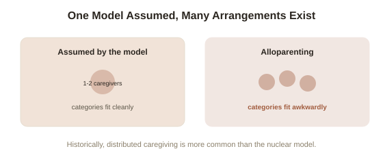

Chapter 5: Cross-Cultural Variation and the Limits of the Model
Four chapters have treated attachment theory's categories — secure, anxious, avoidant, disorganized — as a settled, universal map of how humans bond. It's time for the honest caveat this topic has been building toward: the research base behind that map is overwhelmingly drawn from a narrow slice of humanity, and where researchers have actually looked outside it, the picture gets more complicated in ways worth taking seriously.
The WEIRD sample problem, applied directly here
The Strange Situation was developed and validated primarily on middle-class American and European families, and for decades, most attachment research continued to draw overwhelmingly from similar populations — what psychologists now call WEIRD samples (Western, Educated, Industrialized, Rich, Democratic — a population that turns out to be a statistical outlier on many psychological measures, not a neutral default for "how humans work"). This matters specifically for attachment theory because the entire framework assumes a particular caregiving arrangement as its baseline: one or two primary caregivers, a private household, and a specific expectation of individual autonomy paired with individual bonding — an arrangement that is common in the populations most heavily studied, but far from universal across human caregiving cultures historically or globally.
What actually changes in other caregiving arrangements
Anthropologist and psychologist cross-cultural research has found genuinely different patterns in societies organized around alloparenting (child care distributed across multiple caregivers — grandparents, older siblings, and the wider community — rather than concentrated in one or two primary caregivers), which is in fact the more common arrangement across human societies historically and cross-culturally than the nuclear-family model the Strange Situation assumes. Studies among the Efe people of the Democratic Republic of Congo, for instance, found infants forming attachment relationships with several caregivers simultaneously rather than one clearly primary figure — which doesn't fit cleanly into Ainsworth's original categories, built around a single primary attachment figure, without some real adaptation of the framework. German and Japanese samples, studied specifically because their cultural norms around independence and interdependence differ in known ways from the American sample Ainsworth originally used, showed meaningfully different distributions across the secure, anxious, and avoidant categories — not because German or Japanese infants are less securely attached in some deeper sense, but because childrearing practices around independence (how early and how routinely infants are left with unfamiliar people, for instance) shift how a given infant responds to the Strange Situation's specific separation-and-reunion structure.

A serious, still-active scholarly critique
Beyond the cross-cultural sampling issue, attachment theory has faced a more fundamental methodological critique worth stating plainly: the Strange Situation is a twenty-minute lab procedure, and its classifications, while impressively predictive on average across large samples, are far less reliable as a diagnosis of any single child — a classification can shift with the child's mood, recent stress, or even which parent is present, and test-retest reliability for individual children is meaningfully lower than the confident, categorical labels ("secure," "anxious") suggest to a general audience. Some developmental psychologists argue the theory, in its popularized form, has drifted further toward certainty than the underlying data actually supports — a caution that echoes a pattern seen elsewhere in psychology, where a genuinely well-supported core finding gets flattened, in popular treatment, into a more rigid and universal claim than the original research base can carry.
What survives the caveats — and what doesn't
None of this means attachment theory's core insight is wrong. The basic finding — that early, repeated caregiving experience shapes a lasting template for how comfort and closeness get sought and responded to — has held up across a genuinely wide range of studies and cultures, even where the specific four-category system needs adaptation. What doesn't survive scrutiny as well is the more totalizing popular version: that everyone fits neatly into exactly one of four boxes, fixed from a twenty-minute test in infancy, applicable identically across every culture and family structure on Earth. The more defensible version, and the one this topic has actually been building toward across five chapters, is closer to what Chapter 3's internal working model always implied: a real, biologically-grounded, but genuinely updateable template, shaped by whatever caregiving arrangement a person actually grew up in — not a fixed verdict handed down once and never revisited.
Try this
Ideas for noticing or testing this in your own life.
- Think about your own early caregiving arrangement — how many consistent caregivers you actually had, and how that compares to the single-primary-caregiver assumption baked into the classic model — and consider whether the four categories fit your own history cleanly or awkwardly.
- Notice the pull toward treating a psychological category as more fixed and certain than the underlying research actually supports — a useful instinct to carry into other popular psychology claims beyond this one topic.
Worth pulling on?
A few loose threads from this chapter — if any of these genuinely grab you, that's a good sign of where to go next.
- This chapter's caution about popularized psychology outrunning its research base is a recurring pattern worth watching for across the field generally, not unique to attachment theory. → Already in the library: Philosophy of Science's chapter on the replication crisis covers the broader version of this caution.
- How much of personality and relational style is shaped by early caregiving versus other factors is a live, ongoing question that connects directly to a separate, well-established model of adult personality. → Already in the library: Personality (The Big Five) covers a largely independent, trait-based account of individual difference.